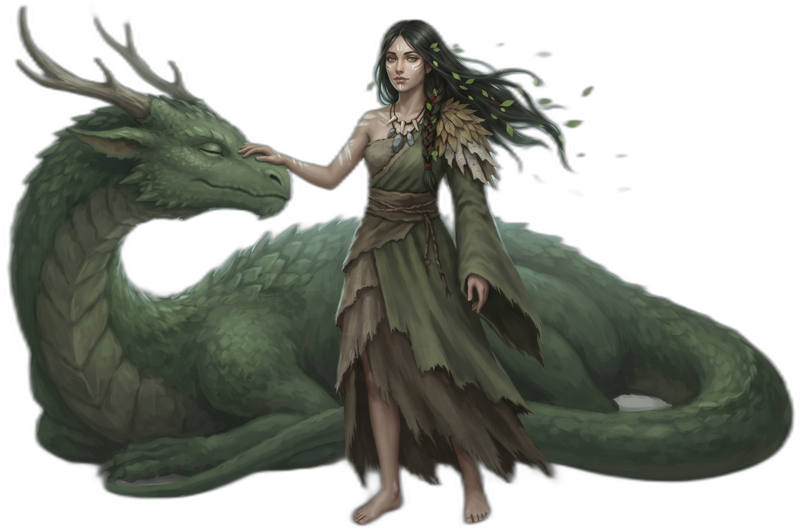
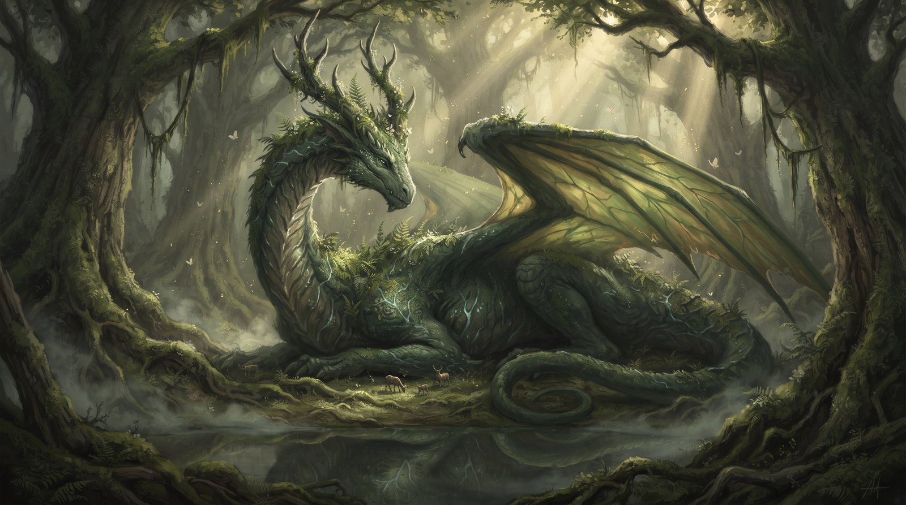

Nheris, O Reino Oculto
Magia ancestral guardada longe dos olhos dos outros reinos.

O Quarto Filho Místico
O mais novo dos filhos era o mais introspectivo. Silencioso. Espiritual. Belford o viu partir para o leste, para as florestas longínquas e pântanos densos, onde a magia antiga ainda sussurrava pelas folhas.
Ali nasceu o quarto reino — uma terra onde xamãs andam entre espíritos e os dragões são vistos como portais e maldições. A magia não é comum em Belford. E talvez por isso, esse reino permaneceu oculto. Distante. Observando.
As Florestas Sussurrantes
As florestas do Reino Oculto não são como as demais. As árvores têm milênios, seus troncos marcados com runas antigas que poucos conseguem decifrar. Dizem que as árvores falam, que o vento carrega mensagens dos espíritos, que cada folha contém um segredo esperando ser revelado.
Nas clareiras mais profundas, onde a luz do sol mal penetra, os xamãs realizam seus rituais. Eles não usam armas de metal, mas sim feitiços tecidos com palavras antigas, amuletos feitos de ossos de animais sagrados, e poções extraídas de plantas que só crescem sob a luz da lua.
Os Xamãs e os Espíritos
Os habitantes do Reino Oculto não se veem como mestres da natureza, mas como parte dela. Os xamãs servem como intermediários entre o mundo mortal e o realm espiritual. Eles podem falar com os ancestrais, prever o futuro através das entranhas da terra, e curar doenças que os médicos de outros reinos consideram incuráveis.
Essa visão dos dragões como seres místicos, e não apenas monstros, é o que diferencia o Reino Oculto dos outros reinos de Belford. Enquanto Irus os vê como ameaças, Kheltan como desafios, e Lotun como presas, o Reino Oculto os entende como parte de um equilíbrio cósmico.

Os Pântanos das Almas
No coração do reino estão os Pântanos das Almas, águas escuras onde os espíritos dos mortos descansam antes de passar para o outro mundo. Dizem que quem bebe dessas águas ganha a visão, mas também arrisca perder a própria alma.
Os pântanos são guardados por criaturas místicas — serpentes com olhos de cristal, aves que cantam profecias, e árvores que se movem quando ninguém está olhando. Apenas os xamãs mais experientes ousam entrar nessas terras, e mesmo eles o fazem com respeito e temor.
Magia Antiga e Proibições
A magia do Reino Oculto é diferente da feitiçaria comum. Não se baseia em fórmulas ou encantamentos, mas em conexão. Os xamãs não "controlam" os elementos — eles pedem permissão, eles negociam, eles se tornam um com o que desejam influenciar.
Existem proibições estritas: nunca usar magia para ganho pessoal, nunca interferir no livre arbítrio, nunca despertar os espíritos adormecidos sem razão justa. Quem quebra essas regras não enfrenta punição humana, mas a ira dos próprios espíritos.
Observadores Silenciosos
O Reino Oculto permaneceu afastado dos conflitos dos outros reinos, mas nunca ignorou o que acontecia em Belford. Os xamãs previram a chegada de Vhar'Zhul, sentiram a perturbação no equilíbrio quando Thorfinn devorou o coração do deus-dragão.
Eles observaram em silêncio enquanto os outros reinos lutavam, coletando conhecimento, entendendo as mudanças no tecido da realidade. Sabem que o que aconteceu com Thorfinn é apenas o começo de algo maior.
Os Segredos Guardados
Nas bibliotecas subterrâneas do Reino Oculto, guardadas por magias mais antigas que os próprios dragões, existem textos que falam sobre a verdadeira natureza de Albinur. Sobre os deuses que existiam antes dos dragões, sobre as guerras que moldaram o universo, sobre o propósito real dos continentes.
Esses segredos são guardados não por egoísmo, mas por sabedoria. Os xamãs entendem que algum conhecimento pode destruir tanto quanto pode salvar.
O Despertar
Agora, com as mudanças que Thorfinn trouxe ao mundo, o Reino Oculto começa a se mover. Os xamãs sentem que o tempo da observação está terminando, que o momento da intervenção se aproxima.
Eles sabem que a jornada de Thorfinn fora de Belford não é acidental. Que as respostas que ele busca podem estar justamente nas florestas ancestrais que eles protegem há séculos.
O Reino Oculto não é apenas um lugar — é a memória de Albinur, a consciência do continente. E enquanto os outros reinos lutam com armas, o Reino Oculto prepara-se para lutar com conhecimento, com magia, com a verdade que poucos estão preparados para ouvir.